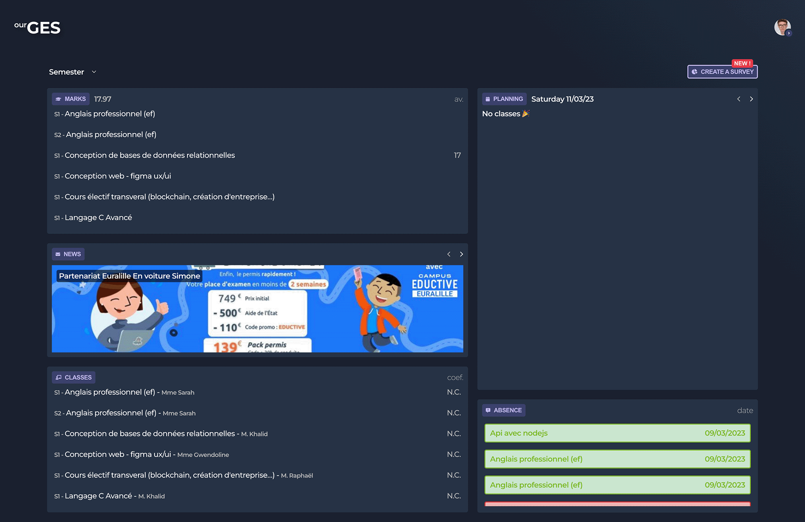

Ourges
ourges.fr est un site développé par des étudiants pour des étudiants.
Ourges est une extension à myges.fr, extranet du réseau éductive, afin de permettre aux étudiants de voir leurs notes, leurs moyennes, leurs absences ou encore leur planning sur la semaine sous forme de tableau de bord.
Cette outil permet aussi la possibilité de créer des sondages visibles ou non par tous les étudiants.
Fonctionnalités
- Dashboard
- Sondage
- Moyenne
